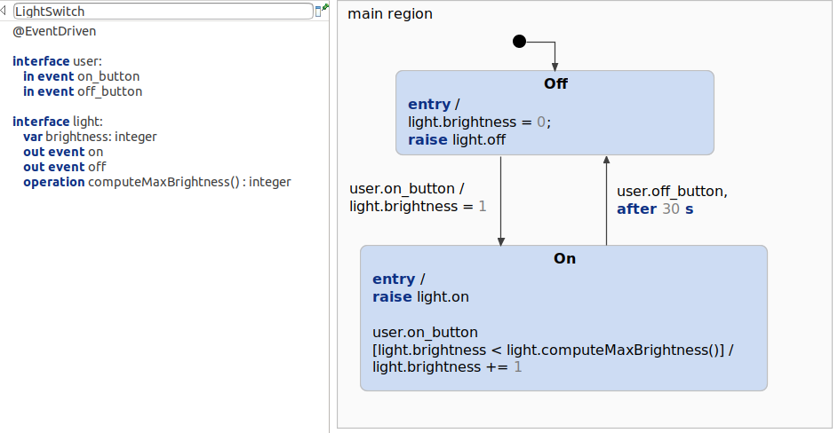
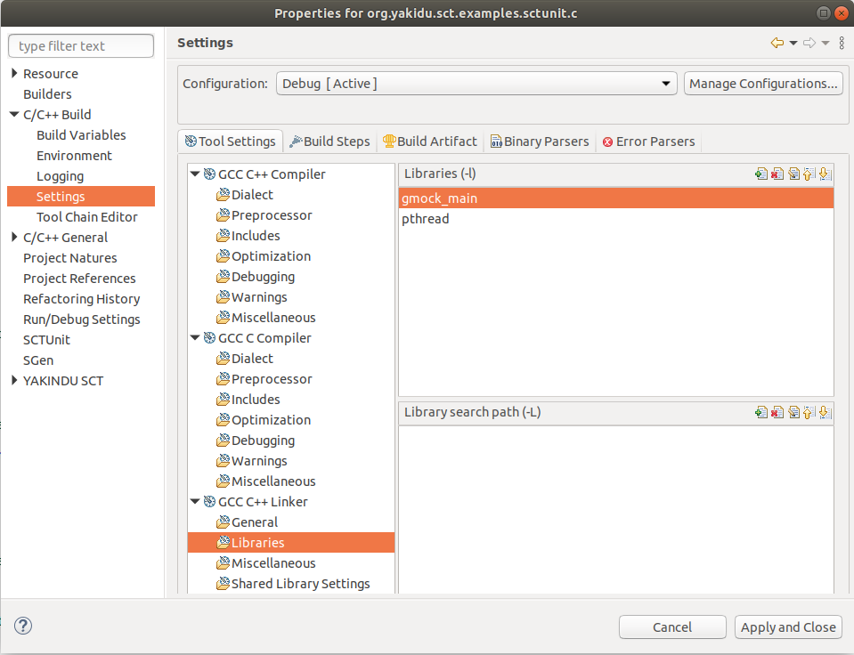
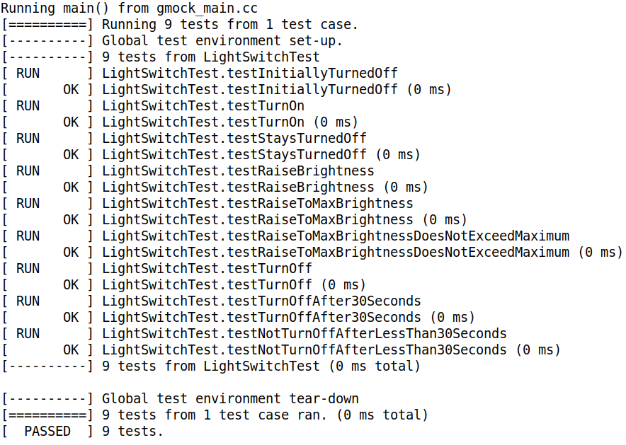

This example demonstrates how to generate GTest code from SCTUnit tests and how to set everything up. The test program can be compiled, executed and integrated in your build process easily.
The example application and SCTUnit test is based on the previous example Testing State Machines with SCTUnit.

GTest is a multi-platform testing framework written in C++ by Google. It allows writing tests for C and C++. You can find the repository here: https://github.com/google/googletest.
The installation of GTest is based on your operating system. Google provides generic installation instructions:
https://github.com/google/googletest/blob/master/googletest/README.md.
For compiling a C++ project in Eclipse is required. Additionnally, the gmock_main and pthread library must be added to the C++ Linker is required. For this test project, the project has already been configured. However, if you want to create your own projects executing tests, you need to add the libraries them. Note: The including order of the library is important!

Code generation for C code has already shown step by step in the previous example C Code Generation. This example contains a code generator c.sgen file for generating the state machine code, which is required. Additionally to that, the tests folder contains a code generator file for the SCTUnit file: c_test.sgen. The generator ID for this example is sctunit::c. You can right click the generator file and generate the code artifacts. This will generate a GTest file (.cc), which can be compiled and executed. You can change the test file and regenerate the test.
After generating the code, the project can be compiled: Right click->Build project. After this you can run the created binary. This is the test output:
